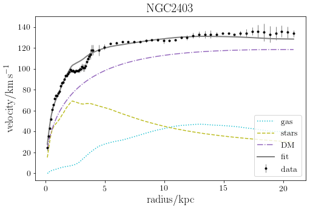

Rotation curve decompositions with Gaussian Processes: taking into account data correlations leads to unbiased results
Correlations between velocity measurements in disk galaxy rotation curves are usually neglected when fitting dynamical models. This notebook, which accompanies the paper Posti (2022), Res. Notes AAS, 6, 233, shows how data correlations can be taken into account in rotation curve decompositions using Gaussian Processes.
gaussian_processes
Author
Lorenzo Posti
Published
November 2, 2022
#hide Copyright (c) 2022, Lorenzo Posti All rights reserved.
This source code is licensed under the BSD-style license found in the license_notebooks file in the root directory of this source tree.
Copyright (c) 2022, Lorenzo Posti. The code is distributed under BSD-style license and it can be copied and used.
Introduction
Galaxy rotation curves are usually modelled by assuming that each datapoint in the curve is independent from the others. However, this is naturally just a first order approximation, since observational effects such due to geometrical projection and resolution, as well as physical effects such as non-circular motions, can make the velocities measured in two adjacent annnuli significantly correlated.
In this notebook I use the rotation curve of NGC 2403 as a test case to show how to include Gaussian Processes (GPs) in rotation curve decomposition models, in order to account for underlying data correlations. More details can be found in the accompanying paper Posti (2022), Res. Notes AAS, 6, 233.
Here I introduce the data for the galaxy NGC 2403 and the functions needed to work with Eq. (1) in the paper.
Note that the code below works also for any other galaxy whose data are formatted in the same way, e.g. it works with no modifications needed for all galaxies in the SPARC catalog (Lelli et al. 2016).
Definitions of functions for curve decomposition
I start with some definitions to specify \(V_{\rm DM}(R)\), the contribution of DM to the circular velocity in Eq. (1). I assume NFW profiles for the DM halos, which are specified by two parameters: halo mass \(M_{\rm h}\) and concentration \(c\). \(M_{\rm h}\) is the virial mass defined with a critical overdensity of \(\Delta_{\rm c}=200\).
G =4.301e-9# gravitational constant, in Mpc km^2 s^-2 Msun^-1H =70.# Hubble's constant, in km s^-1 Mpc^-1Dc=200.# critical overdensity
Note that below I use jax, and not numpy, to define these functions. This is needed in order to do model inference with numpyro.
# accessory function for NFW halosdef jax_fc(x): return jnp.log(1+x)-x/(1+x)# definitions of virial velocity and virial radiusdef jax_Vvir(Mh): return jnp.sqrt((Dc*(H)**2/2)**(1./3.) * (G*Mh)**(2./3.))def jax_Rvir(Mh): rho_hat =4./3.* np.pi * Dc * (3.* (H)**2/ (8.* np.pi * G))return1e3* ((Mh / rho_hat)**(1./3.))# V_DM(R) for an NFW halodef jax_vhalo(params, R): Mh, cc =10**params['log_mh'], 10**params['log_c'] rv = jax_Rvir(Mh)return jnp.sqrt(jax_Vvir(Mh)**2*rv/R*jax_fc(cc*R/rv)/jax_fc(cc))
Finally, below I implement the model rotation curve in Eq. (1). Two things are worth pointing out: - I use a linear interpolation for the baryonic part of the curve, since I assume that \(V_{\rm gas}\) and \(V_\star\) are measured at fixed radii, so that params['r'], params['vg'] etc. are expected to be arrays of the same size. - I decomposed \(V_\star\) in the bulge and disk components, with two different mass-to-light ratios. While my test case NGC 2403 has no bulge, it is good to include it here for the sake of generality. The SPARC catalog indeed includes stellar circular velocities decomposed into bulge and disk.
Let’s plot the data below together with the best-fit model obtained by Posti et al. (2019) for reference.
params = {# parameters of the best-fit in Posti et al. (2019)'log_mh' : 11.4,'log_c' : 1.14,'log_mld': -0.377,'log_mlb': -99., # this galaxy has no bulge# data arrrays'r' : r,'vg' : vg,'vd' : vd,'vb' : vb,}fig,ax = plt.subplots(figsize=(8,5))ax.errorbar(r, vobs, yerr=e_vobs, fmt='.', c='k', lw=0.5, label=r'$\rm data$')ax.plot(r, vg, ':', c='tab:cyan', label=r'$\rm gas$')ax.plot(r, np.sqrt(10**params['log_mld']*vd**2+10**params['log_mlb']*vb**2), '--', c='tab:olive', label=r'$\rm stars$')ax.plot(r, jax_vhalo(params, r), '-.', c='tab:purple', label=r'$\rm DM$')ax.plot(r, jax_vmod(params, r), c='grey', lw=2, label=r'$\rm fit$')ax.set_xlabel(r"$\rm radius/kpc$", fontsize=18)ax.set_ylabel(r"$\rm velocity/km\,s^{-1}$", fontsize=18)ax.set_title(r"$\rm NGC 2403$", fontsize=20);ax.legend(loc='lower right', fontsize=14);ax.tick_params(labelsize=14);

Models with or without GPs
Let’s now get to the modelling side of things. I set up two models here. The first one is analogous to Posti et al. (2019), as well as many other works in this context (e.g. Katz et al. 2017, Li et al. 2020, Mancera-Pina et al. 2022, di Teodoro et al. 2022), it has a \(\chi^2\) likelihood and it implicitly assumes that the rotation curve datapoints are independent. The second one generalizes this model by using GPs to take into account data correlations. I recommend the recent review by Aigrain & Foreman-Mackey (2022), in particular their first section, as an introduction to GPs.
I use the library tinygp to set up my GP regression problem and I use numpyro to sample the posterior distribution. In particular, I use and Hamiltonian Monte Carlo sampler called No U-Turn Sampler (NUTS).
Gaussian Processes
Let’s generate GPs with an Exp-Squared kernel with two parameters, an amplitude \(A_k\) and a scale \(s_k\), i.e. \[
k(R_i, R_j) = A_k \exp\left[-\frac{1}{2}\left(\frac{|R_i-R_j|}{s_k}\right)^2\right]
\] This kernel is said to be stationary because it depends only on the distance between two points \(|R_i-R_j|\).
I now set up the model’s posterior distribution to be sampled by numpyro, thus it is a function containing pyro primitives.
The model starts by defining the priors on the physical parameters (\(\theta_V\) in the paper). I use: - uninformative prior on \(\log\,M_{\rm h}\) - Gaussian on \(\log\,c\), with mean and width following the \(c-M_{\rm h}\) relation found in cosmological simulations (Dutton & Maccio’ 2014) - Gaussian on \(\log\,(M/L)_{\rm D}\), centred on \((M/L)_{\rm D}=0.5\) and with standard deviation of 0.2 dex (compatible with stellar population synthesis models, e.g. Lelli et al. 2016) - Gaussian on \(\log\,(M/L)_{\rm B}\), centred on \((M/L)_{\rm B}=0.7\) and with standard deviation of 0.2 dex (again, see Lelli et al. 2016). Note that this is not used in the case of NGC 2403
After the definition of the priors the function branches out: one branch with GPs and one without. I borrowed this structure from the transit example of Fig. 3 in Aigrain & Foreman-Mackey (2022).
The branch with GP also implement additional priors for the two parameters of the kernel (\(\theta_k\) in the paper), i.e. the amplitude and scale.
def model(t, y_err, y, params, use_gp=False):# priors params["log_mh"]=numpyro.sample("log_mh",numpyro.distributions.Uniform(8.0, 14.0)) params["log_c"] =numpyro.sample('log_c',numpyro.distributions.Normal(0.905-0.101*(params['log_mh']*0.7-12),0.11)) params["log_mld"]=numpyro.sample('log_mld',numpyro.distributions.Normal(-0.3, 0.2)) params["log_mlb"]=numpyro.sample('log_mlb',numpyro.distributions.Normal(-0.15, 0.2)) if use_gp:#################### branch WITH GPs ##################### define kernel parameters params["log_amp"] = numpyro.sample("log_amp", numpyro.distributions.Uniform(-4.0, 5.0)) params["log_scl"] = numpyro.sample("log_scl", numpyro.distributions.Uniform(-2.0, 3.0))# generate the GP gp = build_gp(params, t, y_err)# sample the posterior numpyro.sample("y", gp.numpyro_dist(), obs=y)# calculate the predicted V_rot (i.e. the mean function) of the model mu = gp.mean_function(params["r_grid"]) numpyro.deterministic("mu", mu)else:####################### branch WITHOUT GPs ######################## sample the posterior numpyro.sample("y", numpyro.distributions.Normal(jax_vmod(params, t), y_err), obs=y)# calculate properties of the model numpyro.deterministic("mu", jax_vmod(params, params["r_grid"]))
Running the model without GP, i.e. assuming independent datapoints
I start by sampling the posterior of the model akin to that of Posti et al. (2019), i.e. assuming that the points in the curve are independent.
I’m using arviz to analyse the posterior sampled by NUTS. In particular, keep an eye on r_hat which is the Gelman-Rubin statistics: for our purposes, we can use \({\rm r_{hat}}\simeq 1\) as an indicator that the marginalized posterior on a particular parameter is well determined.
grid_size =1000r_grid = jnp.linspace(r.min(), r.max(), grid_size) # radial grid on which to predict V_rot(R)params = {"vg" : vg,"vd" : vd,"vb" : vb,"r" : r,"r_grid": r_grid}
Running the model with GP, i.e. taking into account data correlations
Now, let’s have a look at what happens when GPs come into play. I run exactly the same procedure as before to sample the model’s posterior, but this time I select the branch with use_gp=True. Since now I have two more free parameters, the scale and amplitude of the kernel, I also initialize these two in init_strategy.
Then I can compare the predicted curve decompositions of the two models. Here I get the predictions of the model, excluding the warmup phase during sampling.
final_shape = (num_chains*(num_samples-num_warmup),grid_size) # shape of the predictions array after removing warmuppred_wn = sampler_wn.get_samples(group_by_chain=True)['mu'][:,num_warmup:,:].reshape(final_shape)pred = sampler.get_samples(group_by_chain=True)['mu'][:,num_warmup:,:].reshape(final_shape)
Given that the parameters of the kernel \(A_k\) and \(s_k\) are well constrained by the model, we can have a look at the correlation matrix of the model with GPs.
The peculiar 2-block shape of this matrix is due to the combined H\(\alpha\)-HI nature of the rotation curve. The optical H\(\alpha\) curve samples the inner regions of the galaxy, up to \(\sim 5\) kpc, with a finer spatial sampling of 0.1 kpc with respect to the HI rotation curve, which instead has a spacing of 0.5 kpc and is from 5 kpc outwards.